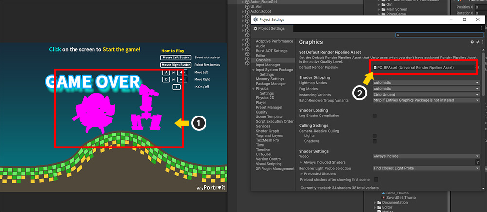
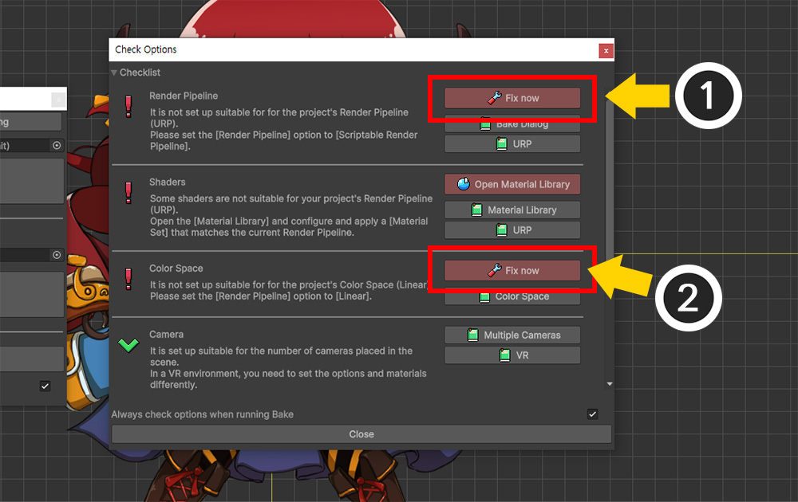
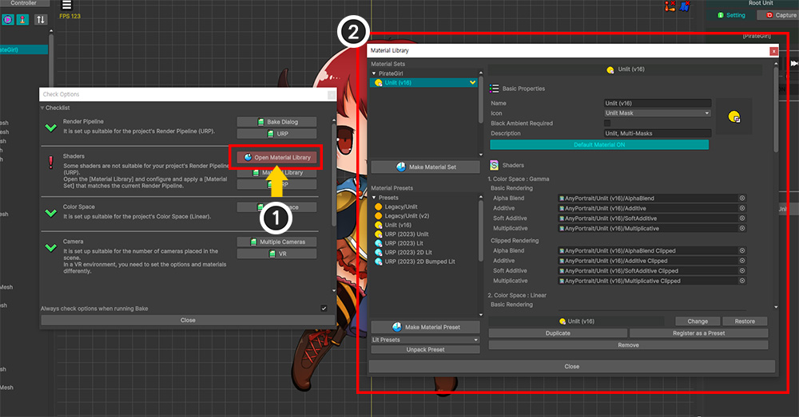
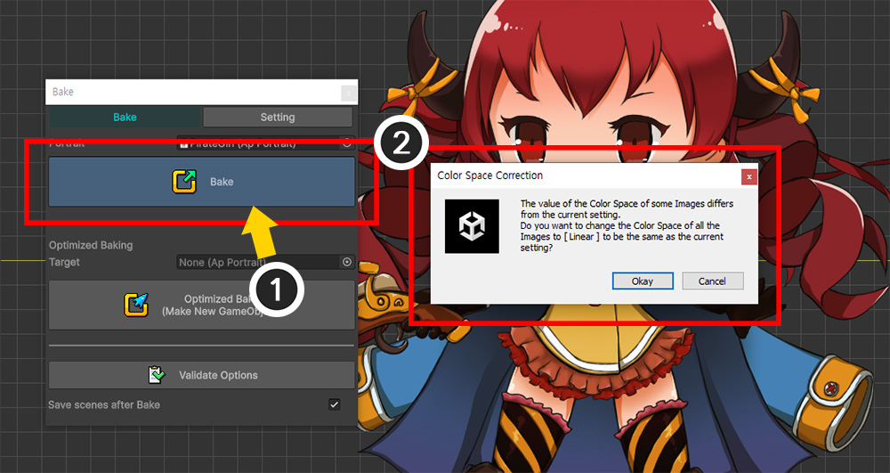
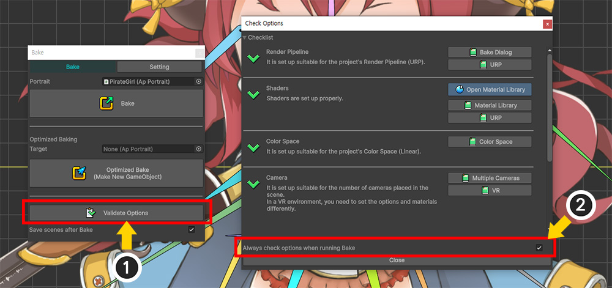

AnyPortrait > Manual > Bake Validation
Bake Validation
1.6.0
Depending on the project settings or the state of the scene, AnyPortrait may need to be set up differently.
In particular, if the options related to rendering are not set appropriately for the project, the character may not be rendered properly.
For those who are not familiar with Unity and AnyPortrait, it is not easy to find the cause and solution of these problems.
The manual on the homepage covers the problems, but it may not be easy to find and read the manual one by one.
For these people, the Bake Validation feature has been added to easily resolve the issues that most people encounter when baking.
We hope that this auxiliary feature will be helpful to those who are new to Unity and AnyPortrait.
Check the Bake options to quickly fix them

Many of the difficulties users experience with the Bake option are related to the render pipeline.
If you have created a project in the latest version of Unity and installed AnyPortrait, you may see demo scenes that do not render properly.
Since AnyPortrait was developed to work with older versions of Unity, the default materials were written for the Built-In render pipeline.
However, the default render pipeline has been changed to URP in the latest version of Unity, which is why the above problems occurred.

If you are familiar with rendering issues, you will easily know how to solve the problem.
However, if you are not familiar with Unity or AnyPortrait, you may find it difficult to solve these problems.
Let's take a look at the process of experiencing and solving the problem from the perspective of a beginner.
(1) Assuming that a rendering issue has occurred, open the AnyPortrait editor and press the Bake button.
(2) Press the Bake button in the Bake dialog.
(3) If a message appears saying that some options are not set appropriately for the current project settings or scene state, press the Fix Issues button.
The above warning message appears when some of the Bake options are not suitable for your project.
In this message, each button performs the following function:
- Fix Issues : Stop the Bake and open the Bake Validation Dialog to resolve the issue.
- Ignore and Bake : Ignore the message and continue with Bake.
- Cancel : Stop baking.

A dialog box appears to check the validity of the Bake options.
This dialog box mainly checks the validity of "Bake options and materials according to the Render Pipeline", "Color Space", and "Camera".
If each item is set to be valid, a green check icon is displayed, and if a problem is identified, an exclamation mark icon is displayed.
If a problem occurs, a button to solve it appears.
In addition, a description of each item and a button to open the manual are provided to help you understand the issue.

Currently, you can see that the issues are occurring in Render Pipeline, Shaders, and Color Space items among all items.
You can see exactly what the issue is by checking the text description.
You can change the Bake options directly according to the description, but you can quickly resolve the issue in this dialog.
(1) In the Render Pipeline item, you can see that you need to change the options according to URP. Let's click the Fix now button.
(2) In the Color Space item, you can see that you need to change the options according to Linear Space, which is the color space of the project. Let's click the Fix now button as well.

Clicking the button will tell you that the issue has been resolved for each item.
You can read the description of each item or open the manual to see more detailed information about how the issue was resolved.
Occasionally, a warning message is displayed even though no issue has occurred.
For example, in the screen above, you can see that additional descriptions related to VR are added to the Camera item.
In cases where the issue check function only works in a limited way or in special situations such as VR, the user must check and resolve it themselves.
Therefore, in addition to the Fix now button, we recommend that you carefully check the information provided by this dialog.

(1) In particular, in the Shader section, the Open Material Library button appears instead of the Fix now button.
(2) Clicking this button will launch the Material Library.
Since this issue is related to materials, not Bake options, you need to resolve the issue directly in the Material Library.
You can find detailed information about the Material Library in Related Page, and this page will briefly show you how to resolve the Bake issue.

(1) Since the current Bake issue is caused by URP, create and apply a Material Set for URP.
(You can check the detailed process in Universal Render Pipeline Linkage.)

(1) Close the Material Library and Bake Validation dialogs and press the Bake button again.
If all Bake options have been properly modified, the warning message displayed above will not occur and Bake will be performed normally.
(2) In some cases, additional messages related to Color Space, etc. may occur as shown above.
Check the contents and press the button.

If the Bake options are set properly, you should see the character rendered normally as shown above.
Open in the Bake dialog

Even if there is no option problem, you can open the dialog directly.
(1) Clicking the Validate Options button at the bottom of the Bake dialog will open the validation dialog.
(2) You can also uncheck the checkbox at the bottom of the validation dialog to prevent messages related to the validity of options from appearing when baking.